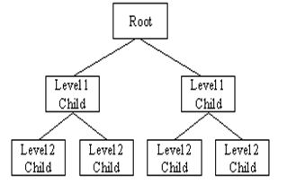
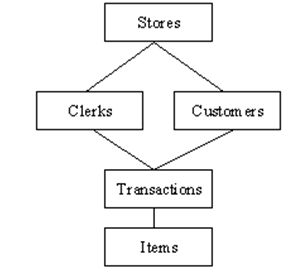
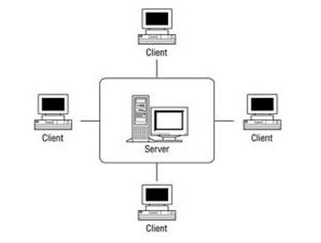

| Hierarchical Databases | |
|---|---|
|
In a hierarchical database management system (hierarchical DBMSs) model, data is stored in a parent-children relationship node. In a hierarchical database, besides actual data, records also contain information about their groups of parent/child relationships. |
 |
| Network Databases | |
|
Network database management systems (Network DBMSs) use a network structure to create a relationship between entities. Network databases are mainly used on large digital computers. Network databases are hierarchical databases, but unlike hierarchical databases where one node can have a single parent only, a network node can have a relationship with multiple entities. A network database looks more like a cobweb or interconnected network of records. |
 | Relational Databases |
|
In a relational database management systems (RDBMS), the relationship between data is relational and data is stored in tabular form of columns and rows. Each column if a table represents an attribute and each row in a table represents a record. Each field in a table represents a data value. Structured Query Language (SQL) is the language used to query RDBMS, including inserting, updating, deleting, and searching records. Relational databases work on each table that has a key field that uniquely indicates each row. These key fields can be used to connect one table of data to another. |
 |